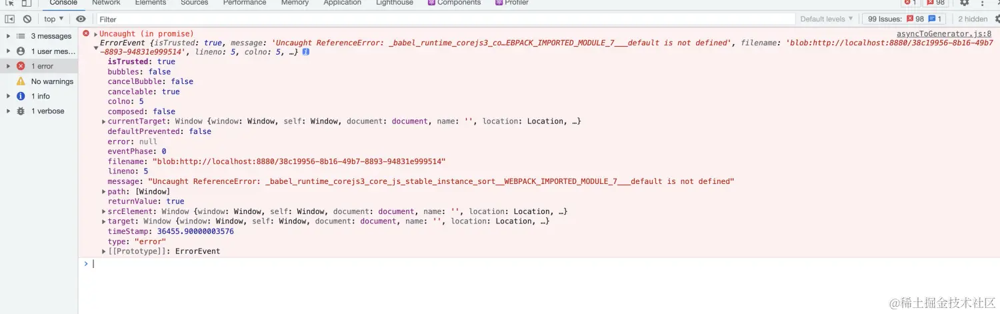
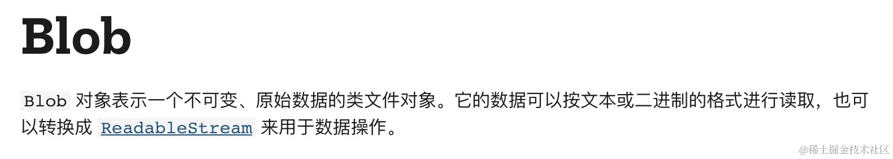
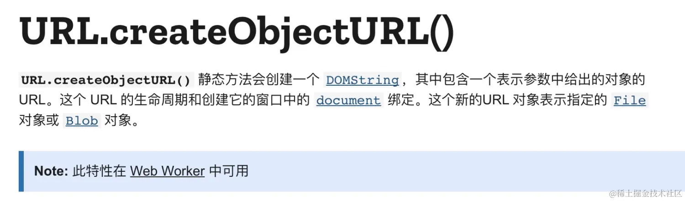

HaoTian · 2024-10-10 22:24:57
大家都知道，为了防止多个线程同时操作 DOM，带来渲染冲突问题，所以 js 执行器被设计成单线程，但是随着时间的推移，js 也会逐渐涉及到大计算的场景（比如大数据计算，图片、视频、音频处理等等），在这样的场景下，单线程就会被长时间阻塞，甚至造成页面卡顿，影响用户体验。
Web Worker就是为了解决单线程这一弊端形成的产物，它允许我们在 js 主线程之外开辟新的 Worker 线程，并将一段 js 脚本运行其中，它赋予了开发者利用 js 操作多线程的能力。因为是独立的线程，Worker 线程与 js 主线程能够同时运行，互不阻塞。所以，在我们有大量运算任务时，可以把运算任务交给 Worker 线程去处理，当 Worker 线程计算完成，再把结果返回给 js 主线程即可。
这里举个例子，我们要对一个长度为 5000000 的数组进行排序，如果直接在 js 中执行，会影响页面的 UI 渲染，伴有明显卡顿现象，接下来我们用 worker 来实现这个功能，大概了解一下 worker 如何创建，以及 worker 和主进程之间如何通信。
// worker.js
onmessage = async (e) => {
const nums = e.data;
postMessage(nums.sort());
};
// main.js
const numbers = [...Array(5000000)].map(() => Math.random() * 1000000);
const onWorkerSort = () => {
const worker = new Worker("worker.js"); // 创建worker
worker.postmessage(numbers); // 传递业务数据到worker，worker开始执行
worker.onmessage = (e) => {
// 监听worker的执行结果
console.log("排序结果", e.data);
};
};
// main.js
myWorker.terminate(); // 关闭 worker
// worker.js
close(); // 直接执行 close 方法就 ok 了
const worker = new Worker(path, options);
path 是有效的 js 脚本的地址，并且值得一提的是，地址必须遵守同源策略。
所以如果我们这样使用，本地测试可以，但是发布之后会有问题。假设运行环境的域名是a.com，但是test.worker.js是部署在 cdn 的，所以会存在跨域的问题。
// webpack配置多入口
module.exports = () => {
extry: {
'./src/index.js': 'app.js',
'./worker/test.worker.js': 'test.worker.js'
}
};
// 主js文件使用
const worker = new Worker('./test.worker.js');
import React from "react";
import { useWorker } from "@koale/useworker";
const numbers = [...Array(5000000)].map(() => Math.random() * 1000000);
const sortNumbers = (nums) => nums.sort();
const Example = () => {
const [sortWorker] = useWorker(sortNumbers);
const runSort = async () => {
const result = await sortWorker(numbers); // non-blocking UI
console.log(result);
};
return (
<button type="button" onClick={runSort}>
Run Sort
</button>
);
};
这是官方的一个例子，使用会报如下错误，也没有去深究为啥报错，感觉像是传入一个函数，重新执行的时候上下文环境不一样了。
从上图可以看出，Worker 构造函数接收的 path 可以是一个 Blob URL，那我们就来看看 Blob URL 是什么东西，并且如何创建。
 从上面两个图可以得出，可以通过 URL.createObjectURL()方法来创建一个 Blob URL，并且这个值可以用于 Web Worker，正好完美适配。
// content 就是 worker 文件的内容字符串
const url = URL.createObjectURL(
new Blob([content], { type: "text/javascript" })
);
const worker = new Worker(url);
这样就可以将 worker 文件的内容构建到源码当中，不用单独发布一个 js 文件了。为了进一步弱化 worker 相互传递事件的复杂度，在业务开发中使用简单，还可以进一步封装，我们来自己实现一个useWorker，核心代码如下：
const createWorkerCode = (code) => {
code = code.replace("export default ", "const __worker_run = "); // worker文件内容需要约定一种格式
return `
onmessage = async (e) => {
${code}
const __worker_result = await __worker_run(e.data);
postMessage(__worker_result);
};
`;
};
const useWorker = (code, config = {}) => {
const {
params,
closeWorkerOnUnmount = true, // hooks卸载时是否结束worker
manual = false, // 是否手动执行worker
} = config;
const [data, setData] = React.useState();
React.useEffect(() => {
const content = createWorkerCode(code);
const url = URL.createObjectURL(
new Blob([content], { type: "text/javascript" })
);
const worker = new Worker(url);
worker.onmessage = (e) => {
// 监听worker接收事件，然后更新result
setData(e.data);
};
return () => {
closeWorkerOnUnmount && worker.terminate(); // hooks卸载时是否结束worker
};
}, [code]);
React.useEffect(() => {
!manual && worker.postMessage(params); // 执行worker文件并给worker传参
}, [JSON.stringify(params)]);
// 手动执行worker逻辑
const run = (p) => {
worker.postMessage(p);
};
return {
data, // worker执行的结果
run, // 手动执行worker
worker, // worker实例
};
};
上面大数据排序的实例可以使用自建useWorker轻松实现：
// worker.js
export default (nums) => {
reutrn nums.sort();
}
// main.js
import workerCode from './worker.js'; // workerCode是文件内容字符串
const numbers = [...Array(5000000)].map(() => (Math.random() * 1000000));
const App = () => {
const { data, run } = useWorker(workerCode, { manual: true })
console.log('排序结果：' data);
return (
<Button onClick={() => run(numbers)}>大数据排序</Button>
)
}
这里还要提到一点，我们针对 worker.js 的文件使用了 raw-loader 进行处理，所以此类文件在 import 的时候不会使用 babel 进行编译，而是直接返回内容字符串，配置如下：
webworker: {
test: /\.worker\.(js|ts)$/i,
use: [{
loader: 'raw-loader',
}],
},
worker 的使用成本主要有几点，第一是通信复杂，需要频繁在主进程和 worker 之间调用 postmessage 和 onmessage，容易绕晕；第二是 worker 如果为单独的 js 文件，需要解决跨域问题。
本文通过自建 useWorker 来解决上面两个问题，将通信封装在内部，且将 worker 代码也打包到项目 bundle 中。自然在使用上面也存在一定限制，比如 worker 文件里面必须是 export default () => {} 的格式，另外是项目在处理 worker.js 文件时需要借助raw-loader。
最后 worker 不是万能的，一般场景是用于大数据的计算和处理，它还是存在一些限制，比如 worker 文件只能使用原生的 js 语法，不能操作 dom 等等。